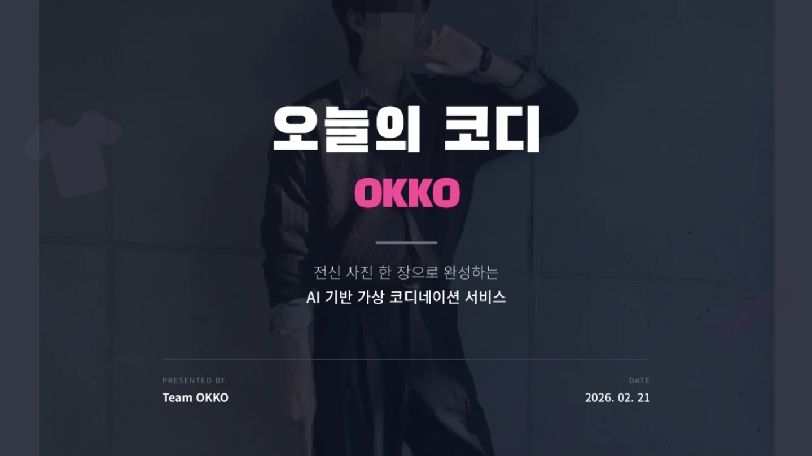
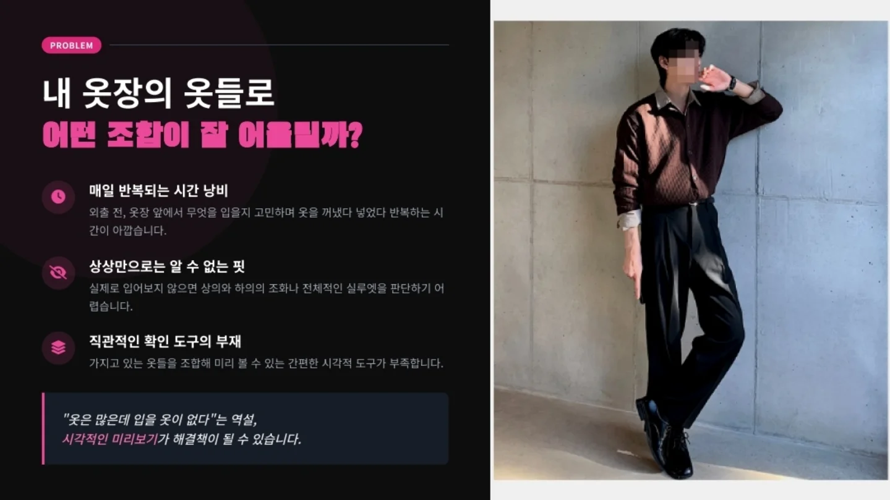
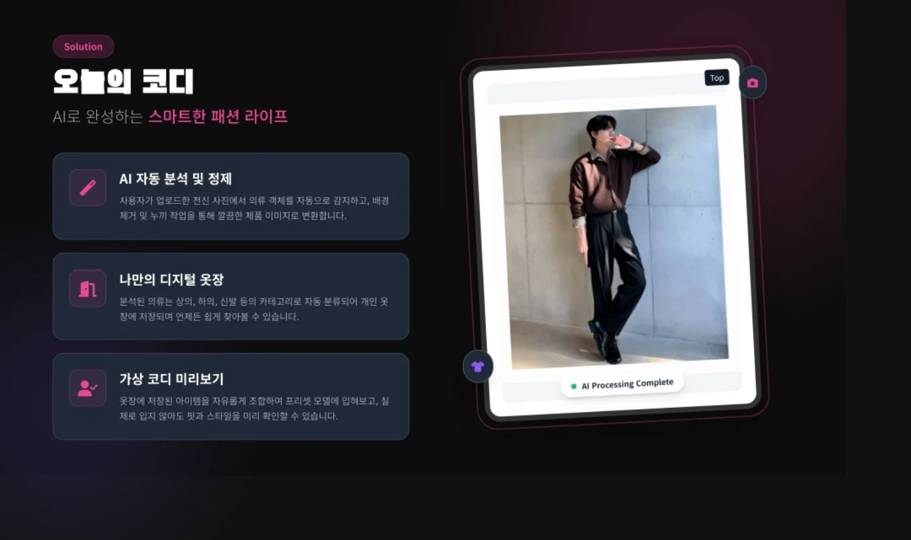
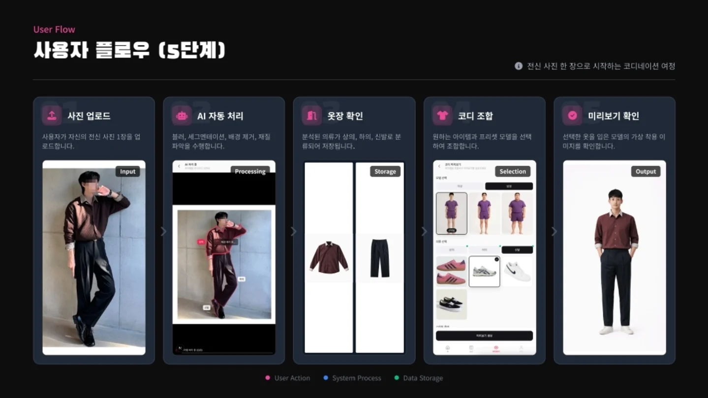
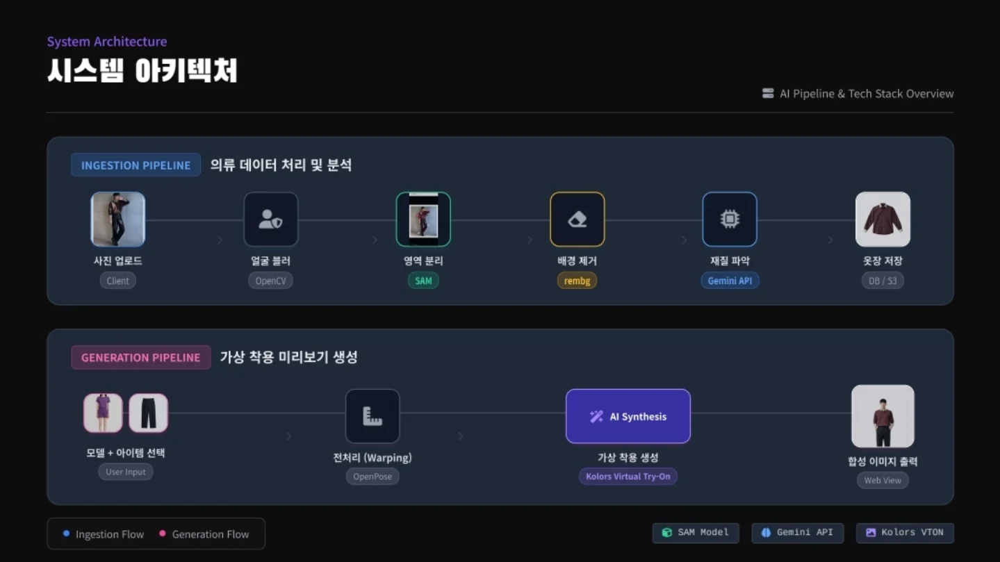
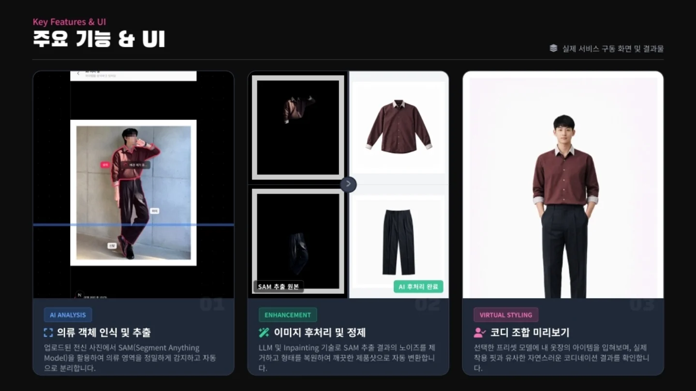
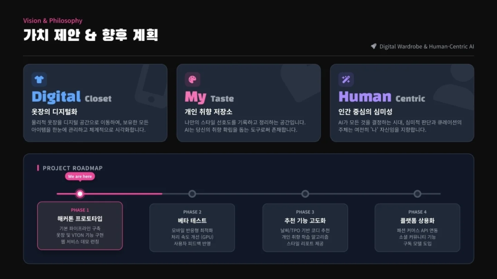
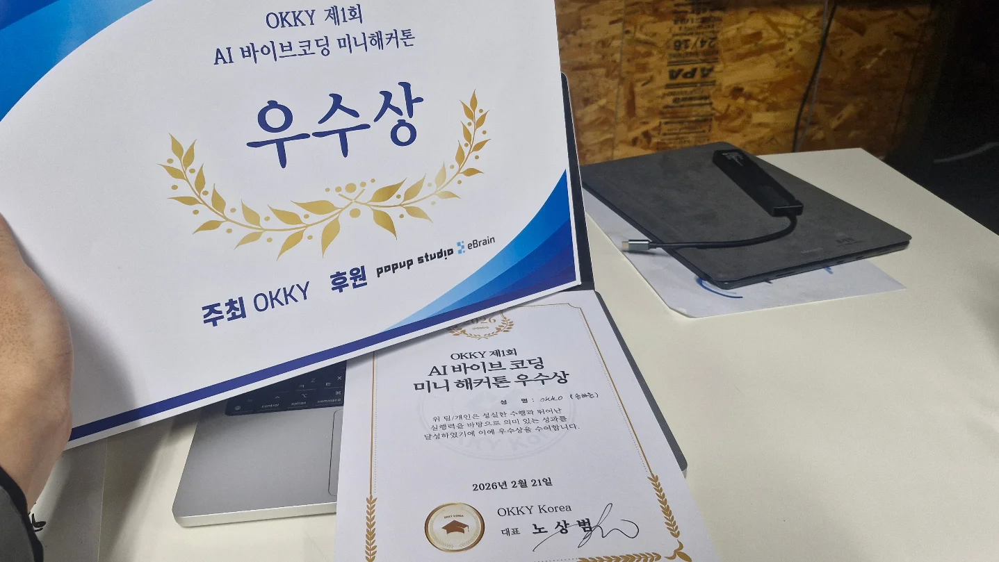

OKKO in OKKY
OKKY 제1회 AI 바이브코딩 미니 해커톤
코드를 치지 말 것.
어쩌다 보니 공고도 마감된 해커톤을 스파르타 카르텔에 힘입어 참여할 기회가 생겼다.
이름하여 OKKY 제1회 AI 바이브코딩 미니 해커톤. 물론 그 이름에서 아저씨 향기가 날 순 있지만 그래도 오래 살아남은 몇 안되는 개발자 커뮤니티로 무시할 순 없다.
룰은 단순 간단하지만 오묘했다. 개발자를 데려다 놓고 코드를 치지 말라는 룰. 해커톤이라고 불러도 되나 싶을 정도로 짧은 4시간의 작업시간.

오늘의 코디, OKKO
AI가 다 만들어내는 세상에서 인간은 뭘 하면 좋을까. 심미적인 선택이 그 마지노선이 아닐까 싶은 마음이었다.
전신 사진 한 장을 올리면 AI가 옷을 인식하고, 분석하고, 가상 옷장을 만들어주고, 코디까지 제안해주는 서비스. 인간은 최종 선택만 하면 된다.


4시간의 기록


기술 스택

가치 제안

백케스팅
백케스팅이라는 개념이 있다. 신기술이 나타났을 때 "어? 이거 영화에서 본적 있는데?" 싶은 마음이 바로 그 부분이다.
각본가가 미래의 신기술을 예상하는 것이 아니라 새로운 기술이 개발될 때 미디어 매체로부터 영향을 받는다는 개념이다.
내가 아는 영화 중 AI를 가장 자연스럽게 다룬 영화는 아이언맨이었다.
헤이 자비스, 아이언맨 만들어줘.
당연히 뚝딱 만들어줬다. 고고도에선 아이싱 문제로 얼어붙어서 죽을뻔하게.
헤이 자비스 고쳐줘.
당연히 뚝딱 고쳐줬다. 집이 아니면 입지도 벗지도 못하게.
헤이 자비스 고쳐줘.
당연히 뚝딱 고쳐줬다. 슈트를 들고다닐 수 있게.
모나코서킷에서 박살나고 몸에 나노로 심는 것까지 이어서 계속해서 개선해나간다.
AI가 짱짱 강한 슈퍼 히어로가 되는 세계관에서도 여전히 토니 스타크의 오케스트레이션이 필요했다.
바이브 코딩이 그 일종이 아닌가 싶다.
"몇 명 구할 수 있지?"
비행기가 공중에서 터져서 승객들이 떨어지고 있는 순간에 토니는 자비스에게 물었다.
"팔 다리 각각 모두 사용하면 네명까지 가능합니다."
토니는 그 세계관에서도 자비스의 조언에 "그럼 네명을 구하자!" 라고 하지 않고 모두의 손을 이어서 구하는 방법은 어떤지 다시 검토를 제안했다.
토니! 너 정말 핵심을 찔렀어!
다시금 1학년 필수 교양에 들어갔던 논리와 비판적 사고가 요즘 시대에 얼마나 필요한지 깨달았다.
15팀 중 3등
잘 했다기 보단 취지에 맞았다라는 해석이 맞아 보인다.
그치만 정말 기상천외한 분들이 많았다.
4시간만에 파이썬 GC를 개선하신 분부터 별의별 자동화가 다 나왔다.

OKKO in OKKY.
겨울이었다....